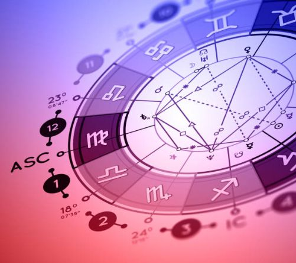

Natal chart analysis
Find out how the position of the planets at your birth influence your entire life and personality.
Book your initial consultation today and find out how your life can change for the better!
In the Natal Chart Analysis I will explain the meaning of the rising sign, the planets in house placement and the aspects the planets make.
After this general overview I can go into more detail on a certain topic of your choice: career, love, health, etc.
Find out how the position of the planets at your birth influence your entire life and personality.
Find out if you and your love interest are soul mates, best friends, or a recipe for disaster.
If you wonder if you are in the right job, making enough money and maintaining a good work/life balance, this report is for you!
Prepare for what's ahead. Get personal guidance for the next 12 months on relationship, love, career, money, health, etc.
Medical astrology, or Health astrology, is the branch of astrology that deals primarily with health concerns. In your natal chart I can determine which, if any, health issues you are likely to experience throughout the course of your life.
Your Saturn return occurs every 27 to 29 years when the planet Saturn returns to the sign and degree it was at when you were born. It's a time of coming into alignment with your life's true path. The Saturn return calls for personal growth and major life changes.
Your Jupiter return is a time to plan. Jupiter returns to your natal sign and degree every 12 years. Your Jupiter return can be a tremendous growth period, materially, financially, intellectually, professionally and personally.

Your Pluto square Pluto transit happens once in your life and is a period of profound change and renewal.